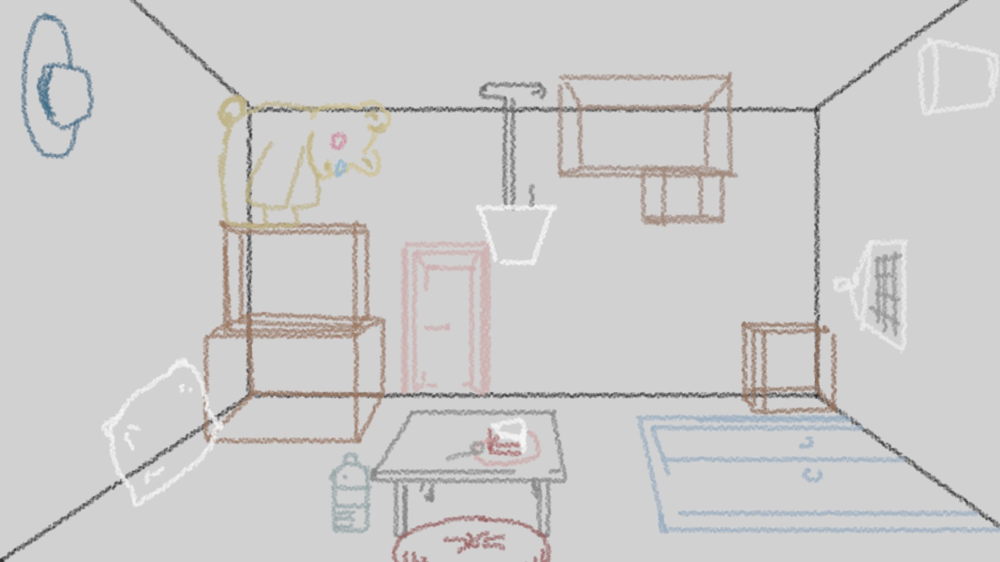
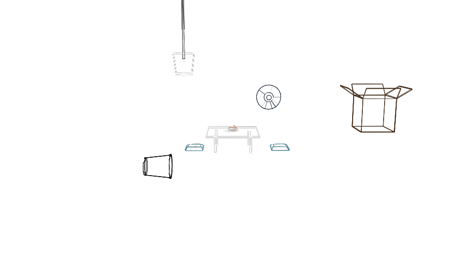
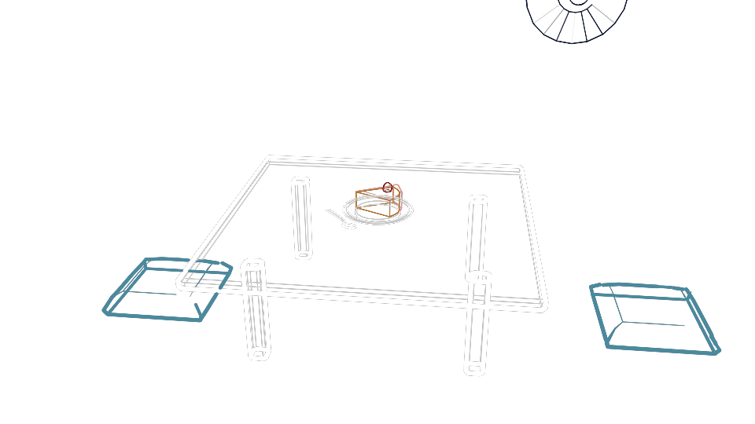
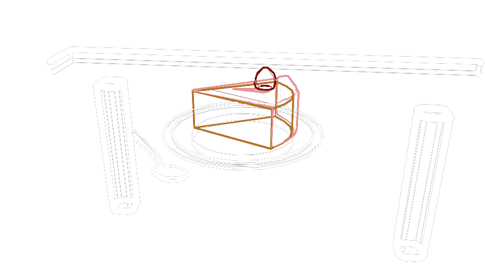

"You really should go to the Deck, if you ever find the way out of here. when you see the real sky you will understandeverything."
the White End
Neutral ending of the story.
Project Rooms started off by depicting a strange dream, where I woke up finding myself in a room with no window but many doors each leading to different places in the past. Someone told me that I should go up to the deck, and I'll find out all these places were just rooms inside a boat. When I find the real sky, I will understand the meaning of everything. But the last room I entered was an atrium where flickering figures are silently watching a huge pile of paper burning without a smoke.
Room Plans
 The Grey Starting Room
The Red End
The Blue End Entrance
 The grey starting room aesthetic and technical testing modeled and rendered in Autodesk Maya
 A closer look...
 Even closer look......
How could there be an objective “meaning of everything”? I thought. So I decided to build this story into a game, where your “real sky” depends on the choices you made.
If you choose to hate, you will find the red end where sky is forbidden; if you choose to love, the open blue sky awaits you; if you regret and confess, desire too much, or just enjoy being in a room, the white end with paper sky could possibly be where you go.
In Project Rooms, you will find out, at a certain point, that you are already dead, and will be lingering in this peculiar space in the first 7 days after death. You will constantly hear people mentioning the deck, the red room, and the atrium. The reason you dead and the place end up with at the last day will be determined by your own choice of speech and behavior.
About 7 days
It is believed by the Chinese tradition that souls do not go to heaven or hell right after their bodies' death, they stay in a strange space, and will come back home at the seventh day to take a last glance of the living.
Time reminder UI is designed as burning down candles. 3 groups each indicates the first day, 6th day, and last day; the 3 candles in each group shows time at the beginning of the day, 10am, and 12pm.
Characters
The representation of this woman, such as photos and letters, will keep reappearing through the journey, but her actual figure will not show until the end. And whichever room the player end up with she will come congrats, teases, or simply looks at you.
Characters are still work in progress. Not to spoil, but this is my original character designed and modeled in Maya, testing with her hair flow physics.